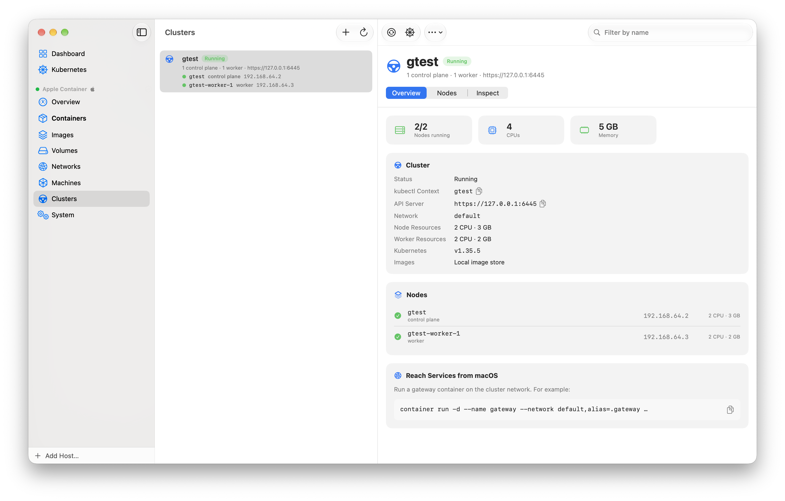
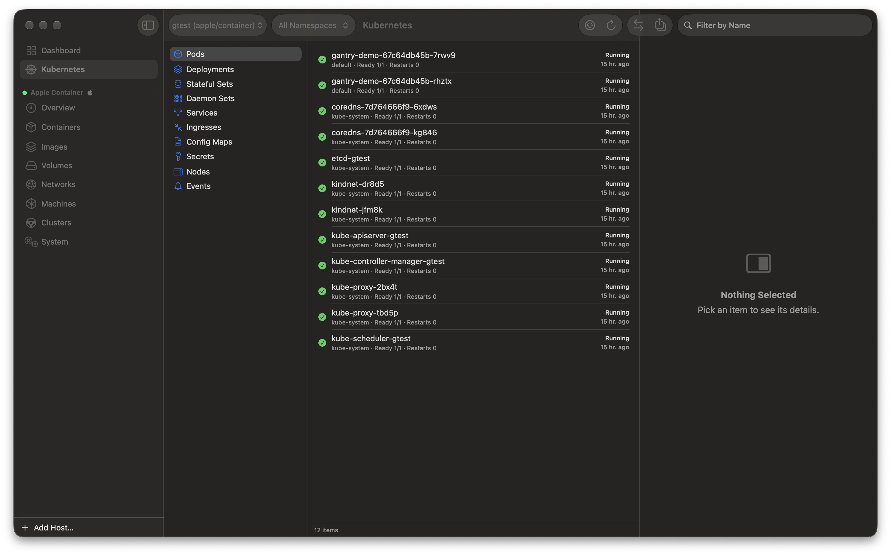

Kubernetes su Apple container
apple/container gali vykdyti Kubernetes klasterį, kurio mazgai yra konteineriai jūsų Mac kompiuteryje. Gantry – grafinė sąsaja tam: sukurkite klasterį, stebėkite, kaip pasileidžia mazgai, vykdykite jame savo vietinius atvaizdus ir naršykite jo podus, žurnalus bei paslaugas be ilgų container cluster komandų.
Trumpai. apple/container serveryje Gantry skyrius Klasteriai kuria ir trina Kubernetes klasterius su container cluster (CLI 1.6.1 ir 1.7) arba container k8s (CLI nuo 1.5.0 iki 1.6.0). CLI 1.7.1 versijoje jis nustato darbinių mazgų dydį atskirai nuo valdymo plokštumos ir įjungia bendrą atvaizdų saugyklą. Skyrius Kubernetes leidžia naršyti klasterį: podai, žurnalai, apvalkalas, prievadų persiuntimas, masto keitimas ir „Taikyti YAML“.
Reikalavimai
- Mac su Apple silicon, macOS 26 ir Gantry (
brew install --cask getgantry/tap/gantry). containerCLI 1.5.0 arba naujesnė; rekomenduojama 1.7.1. Darbiniams mazgams ir CNI parinkčiai Nėra reikia 1.6.0 arba naujesnės. Darbinių mazgų dydžiams ir bendrai atvaizdų saugyklai reikia 1.7.0 arba naujesnės. Naudokite pasirašytą diegimo paketą: 1.7.1 Homebrew versijoje nėra klasterio paslaugų.- Gantry Kubernetes naršyklei daugiau nieko nereikia.
kubectlreikia tik tada, jei klasterį norite naudoti ir iš terminalo.
Klasterio kūrimas
- Pasirinkite savo apple/container serverį ir šoninėje juostoje atidarykite Klasteriai.
- Pradėkite kurti naują klasterį ir užpildykite toliau nurodytas parinktis.
- Sukurkite jį. Sąraše rodomas naujas klasteris ir eiga realiuoju laiku. Atšaukti sustabdo kūrimą ir ištrina jau sukurtus mazgus.
| Parinktis | CLI vėliavėlė | Pastabos |
|---|---|---|
| Pavadinimas | --name | Kartu ir kubeconfig konteksto pavadinimas |
| Darbiniai mazgai | --workers | Darbinių mazgų skaičius. CLI 1.6.0+ |
| Darbinių mazgų CPU ir atmintis | --workers count=N,cpus=C,memory=M | CLI 1.7+. Iki 1.7 --cpus ir --memory nustato kiekvieną mazgą |
| CPU | --cpus | Valdymo plokštumai (CLI 1.7+) arba kiekvienam mazgui (iki 1.7) |
| Atmintis | --memory | Valdymo plokštumai (CLI 1.7+) arba kiekvienam mazgui (iki 1.7), pavyzdžiui, 4G |
| Naudoti vietinius atvaizdus | --shared-image-store | CLI 1.7+. Mazgai vykdo atvaizdus iš jūsų vietinės atvaizdų saugyklos |
| Mazgo atvaizdas | --node-image | Jei tuščia, naudojamas CLI numatytasis |
| CNI | --cni | Numatytasis (įtrauktas kindnet), Nėra (NONE, CLI 1.6.0+) arba pasirinktinio manifesto kelias |
Ta pati komanda CLI:
container cluster create --name dev --cpus 2 --memory 4G \
--workers count=2,cpus=2,memory=4G --shared-image-storeMazgai ir klasterio informacija
Klasterių sąraše kiekvienam klasteriui skirta viena eilutė. Išsamiame rodinyje yra Apžvalga (kubectl kontekstas, API serveris, Kubernetes versija, atvaizdų saugykla, darbiniai mazgai ir jų ištekliai, mazgų tinklas), lentelė Mazgai ir Tikrinti neapdorotiems mazgų duomenims. Įrankių juostoje yra Naršyti išteklius, o meniu „Daugiau“ – Įrašyti kubeconfig, Kopijuoti kubectl konteksto komandą ir Ištrinti.

Klasterio mazgai yra konteineriai, bet juos valdo container cluster. Gantry išjungia mazgo paleidimą, sustabdymą, paleidimą iš naujo, pašalinimą ir pervadinimą ir paaiškina kodėl, o „Paleisti visus“ ir „Sustabdyti visus“ mazgus praleidžia. CLI 1.7 versijoje CLI taip pat slepia mazgus iš container list. Klasteriai, sukurti su CLI 1.6 ar senesne versija, 1.7 sąraše nerodomi; pašalinkite juos komanda container cluster delete --name <name>.
Klasterio naršymas
Veikiančiame klasteryje spustelėkite Naršyti išteklius arba šoninėje juostoje atidarykite Kubernetes. Šiam skyriui serverio nereikia, jame rodomi visi kubeconfig kontekstai; apple/container klasterių kontekstai rodomi pirmi. Pasirinkite vardų sritį arba visas vardų sritis, tada rūšį: podai, Deployment, StatefulSet, DaemonSet, paslaugos, Ingress, ConfigMap, slaptieji duomenys, mazgai arba įvykiai.
- Podai: žurnalai su sekimu, paskutinėmis eilutėmis ir ankstesniu konteineriu; apvalkalas pode; prievado persiuntimas į
127.0.0.1. - Darbo krūviai: Deployment ir StatefulSet masto keitimas; diegimo paleidimas iš naujo.
- Slaptieji duomenys: reikšmės sąraše ir YAML lieka paslėptos, kol spustelėsite „Rodyti“.
- Taikyti YAML: įklijuokite manifestą arba atidarykite failą; klaidos rodomos tame pačiame lange.
Gantry pati jungiasi prie Kubernetes API, naudodama prisijungimo duomenis iš jūsų kubeconfig. Jums nereikia nei kubectl, nei jokio kito įrankio: klasterį, sukurtą su container cluster create, galima naršyti iškart.

container cluster podai su žurnalais ir prievadų persiuntimu.kubectl prijungimas
Kurdama klasterį CLI į ~/.kube/config prideda kontekstą, pavadintą klasterio vardu. Gantry naudokite Kopijuoti kubectl konteksto komandą arba įveskite ją patys:
kubectl --context dev get nodesJei norite laikyti klasterį atskirame faile, naudokite Įrašyti kubeconfig. Gantry vykdo container cluster write-config; numatytasis kelias yra ~/.kube/<name>.kubeconfig.
Vietinių atvaizdų naudojimas klasteryje
CLI 1.7 versijoje kurdami klasterį įjunkite Naudoti vietinius atvaizdus. Tai prideda --shared-image-store, todėl mazgai pagal pavadinimą gali vykdyti bet kurį atvaizdą, kurį sukuriate ar atsisiunčiate su container, be registro. Šis nustatymas nustatomas kuriant ir vėliau nekeičiamas. Kai iš naujo sukuriate žymę, naudokite imagePullPolicy: Always arba naują žymę. Privilegijuoti podai gali skaityti kiekvieną atvaizdą jūsų vietinėje saugykloje, todėl šią parinktį naudokite tik vietiniam kūrimui.
container build -t myapp:dev .
kubectl --context dev create deployment myapp --image=myapp:devCLI 1.5 ir 1.6 versijose skyriuje Atvaizdai dešiniuoju pelės klavišu spustelėkite atvaizdą ir pasirinkite Įkelti į klasterį. Gantry vykdo container cluster load-image, kuri nukopijuoja atvaizdą į kiekvieno mazgo containerd. CLI 1.7 šią komandą pašalino, todėl ten Gantry šį veiksmą slepia.
container cluster load-image --name dev myapp:devKai klasterio paslaugos neatsako
Jei klasterio komanda nepavyksta su klaida cluster service unavailable, Gantry patikrina, kaip įdiegta CLI. Homebrew versijai be klasterio papildinių rodomas pranešimas, kad šioje versijoje nėra klasterio paslaugų, ir nuoroda Atsisiųsti diegimo programą… į pasirašytą paketą. Kitais atvejais Gantry pasiūlo Paleisti paslaugas iš naujo….
CNI pasirinkimas
Numatytasis yra įtrauktas kindnet manifestas. Pasirinkite Pasirinktinis manifestas, kad įdiegtumėte savo CNI, pavyzdžiui, Calico ar Cilium, iš failo. Pasirinkite Nėra, kad CNI įdiegtumėte patys vėliau; iki tol mazgai lieka NotReady būsenos.
Kubernetes paleidimas Mac kompiuteryje su Apple container
Apple container įrankis viena komanda gali sukurti vietinį Kubernetes klasterį. Kiekvienas mazgas yra lengva virtualioji mašina jūsų Mac kompiuteryje. Šis vadovas veda nuo tuščio Mac iki veikiančio diegimo – pirmiausia terminale, tada Gantry.
Ko reikia
- Mac su Apple silicon ir macOS 26 arba naujesne.
containerCLI 1.7.1 iš pasirašyto.pkgapple/container leidimų puslapyje. 1.7.1 Homebrew versijoje nėra klasterio paslaugų, todėlcontainer clusternepavyksta su klaida cluster service unavailable.- Toliau pateiktam pavyzdžiui – apie 6 GB laisvos atminties: trys mazgai po 2 GB.
kubectl, jei klasterį norite naudoti iš terminalo (brew install kubectl).
Įdiegę paketą, vieną kartą paleiskite paslaugas:
container system start- Klasterio kūrimas
Ši komanda sukuria klasterį dev su vienu valdymo plokštumos mazgu ir dviem darbiniais mazgais. Kiekvienas mazgas gauna 2 CPU ir 2 GB atminties:
container cluster create --name dev --cpus 2 --memory 2g \
--workers count=2,cpus=2,memory=2g --shared-image-store--workers count=N,cpus=C,memory=Mnustato darbinių mazgų grupės dydį. Kartokite parinktį skirtingo dydžio grupėms. Be--workersvienas mazgas yra ir valdymo plokštuma, ir darbinis mazgas.--cpusir--memorynustato valdymo plokštumos dydį. Numatytoji reikšmė – ketvirtadalis jūsų Mac CPU ir atminties, bet ne mažiau kaip 2 CPU ir 2 GB.--shared-image-storeleidžia mazgams naudoti jūsų vietinius atvaizdus (žr. toliau). Vėliau to pakeisti negalima: ištrinkite klasterį ir sukurkite jį iš naujo.--cni ./calico.yamlvietoj įtraukto kindnet įdiegia jūsų CNI;--cni NONEneįdiegia jokio.
CLI į ~/.kube/config prideda kontekstą dev. Patikrinkite mazgus:
container cluster list --nodes
kubectl --context dev get nodes- Vietinio atvaizdo vykdymas be registro
Su --shared-image-store mazgai gali vykdyti bet kurį atvaizdą iš jūsų vietinės container atvaizdų saugyklos. Sukurkite atvaizdą ir naudokite jį pagal pavadinimą:
printf 'FROM nginx:alpine\n' > Dockerfile
container build -t hello:dev .
kubectl --context dev create deployment hello --image=hello:dev
kubectl --context dev get podskubectl rollout restart su imagePullPolicy: Always arba naudokite naują žymę. Su IfNotPresent mazgas pasilieka jau turimą kopiją. Bet kas, turintis root teises mazge, gali skaityti kiekvieną atvaizdą jūsų vietinėje saugykloje, įskaitant privačius, todėl bendrą saugyklą naudokite tik vietiniam kūrimui.CLI 1.5 ir 1.6 versijose bendros saugyklos nėra. Ten naudokite container cluster load-image arba Įkelti į klasterį Gantry programoje. CLI 1.7 komandą load-image pašalino.
- Programos atidarymas naršyklėje
Persiųskite vietinį prievadą į diegimą, tada atidarykite http://localhost:8080:
kubectl --context dev port-forward deployment/hello 8080:80- Klasterio sustabdymas ir ištrynimas
container cluster delete --name devJei valdymo plokštumos mazgas sustoja, pavyzdžiui, po container system stop, ištrinkite klasterį ir sukurkite jį iš naujo. Laikiną klasterį kurkite su --rm, kad jo mazgai būtų pašalinti, kai sustoja.
- Dažnos problemos
- cluster service unavailable: CLI yra Homebrew versija arba paslaugos neveikia. Įdiekite pasirašytą paketą arba paleiskite paslaugas iš naujo komandomis
container system stopircontainer system start. Tą patį patarimą Gantry rodo skyriuje „Klasteriai“. - Senojo klasterio nėra sąraše: CLI 1.7 nerodo klasterių, sukurtų su 1.6 ar senesne versija. Pašalinkite tokį klasterį komanda
container cluster delete --name <name>. - Mazgai lieka NotReady būsenos: naudojote
--cni NONE. Pritaikykite CNI manifestą. - Negalite sustabdyti mazgo konteinerio: taip padaryta tyčia.
container stopirdeleteatsisako veikti su klasterio mazgais; naudokitecontainer cluster delete.
- Palyginimas su Docker Desktop ir OrbStack
Docker Desktop turi integruotą Kubernetes su kubeadm (vienas mazgas) arba kind (keli mazgai), o OrbStack – integruotą vieno mazgo klasterį. container cluster vykdo kubeadm su kindest/node atvaizdais, kiekvieną mazgą atskiroje virtualiojoje mašinoje, ir palaiko kelių mazgų klasterius bei bendrą atvaizdų saugyklą. Žr. išsamų palyginimą.
Klasteriai iš DI agentų
Gantry MCP serveris turi list_clusters, create_cluster ir delete_cluster, todėl agentas, pavyzdžiui, Claude Code, gali sukurti laikiną klasterį testui ir po to jį pašalinti.
claude mcp add gantry -- /Applications/Gantry.app/Contents/Resources/gantry-mcpDaugiau apie apple/container
Išsamų žingsnis po žingsnio vadovą darbui terminale rasite puslapyje Kubernetes paleidimas Mac kompiuteryje su Apple container. Skaitykite apple/container vadovą apie kiekvieną container komandą ir jos Gantry funkciją arba sužinokite, kaip Gantry atrodo palyginti su Docker Desktop, OrbStack ir Podman Desktop.
Klausimai ir atsakymai
Ar Apple container palaiko Kubernetes?
Taip. container CLI kuria Kubernetes klasterius, kurių mazgai veikia kaip konteineriai: container cluster CLI 1.6.1 ir 1.7 versijose, container k8s CLI versijose nuo 1.5.0 iki 1.6.0. Gantry tam suteikia grafinę sąsają.
Ar Gantry palaiko container cluster?
Taip. Gantry pateikia sąrašą, kuria ir trina klasterius apple/container serveriuose, rodo jų mazgus, įrašo kubeconfig ir atidaro klasterį savo Kubernetes naršyklėje. CLI 1.7 versijoje ji taip pat nustato darbinių mazgų dydį ir įjungia bendrą atvaizdų saugyklą. Pagal jūsų CLI versiją naudojama cluster arba k8s.
Kaip naudoti kubectl su apple/container klasteriu?
Kai CLI sukuria klasterį, ji į ~/.kube/config prideda kubeconfig kontekstą, pavadintą klasterio vardu. Vykdykite kubectl --context <name> get nodes. Jei norite atskiro failo, Gantry naudokite Įrašyti kubeconfig; numatytasis kelias yra ~/.kube/<name>.kubeconfig.
Kaip įkelti vietinį atvaizdą į klasterį be registro?
CLI 1.7 versijoje sukurkite klasterį su parinktimi Naudoti vietinius atvaizdus (--shared-image-store). Tada podai pagal pavadinimą vykdo atvaizdus, kuriuos sukuriate ar atsisiunčiate su container. CLI 1.5 ir 1.6 versijose skyriuje „Atvaizdai“ dešiniuoju pelės klavišu spustelėkite atvaizdą ir pasirinkite Įkelti į klasterį; Gantry vykdo container cluster load-image. CLI 1.7 komandą load-image pašalino.
Ar galima sukurti klasterį iš kelių mazgų?
Taip. Kūrimo lange nurodykite darbinių mazgų skaičių; darbiniams mazgams reikia CLI 1.6.0 arba naujesnės versijos. CLI 1.7 versijoje darbinių mazgų CPU ir atmintį taip pat nustatote atskirai nuo valdymo plokštumos.
Ar galima naudoti savo CNI, pavyzdžiui, Calico ar Cilium?
Taip. Pasirinkite Pasirinktinis manifestas ir nurodykite manifesto failą arba pasirinkite Nėra ir pritaikykite CNI patys, kai klasteris pasileis. Kol neveikia CNI, mazgai lieka NotReady būsenos. Parinkčiai Nėra reikia CLI 1.6.0 arba naujesnės versijos. Numatytasis CNI yra įtrauktas kindnet manifestas.
Kodėl Gantry rodo, kad klasterio paslaugos nepasiekiamos?
container paslaugos neatsakė į klasterio komandą. Jei jūsų CLI yra Homebrew versija be klasterio paslaugų, Gantry tai praneša ir pateikia nuorodą į pasirašytą diegimo programą apple/container leidimų puslapyje. Kitais atvejais ji pasiūlo Paleisti paslaugas iš naujo.
Ar norint naudoti klasterį Gantry reikia kubectl?
Ne. Gantry pati jungiasi prie Kubernetes API: nuskaito kubeconfig, tada be kubectl pateikia išteklių sąrašus, transliuoja žurnalus, atidaro apvalkalą, persiunčia prievadus ir taiko YAML. Klasterį, sukurtą su container cluster create, galima naršyti iškart.
Ar galima paleisti Kubernetes Mac kompiuteryje be Docker?
Taip. Apple container CLI pati kuria Kubernetes klasterius komanda container cluster create. Kiekvienas mazgas veikia kaip lengva virtualioji mašina, o Docker, Docker Desktop, kind ar minikube nereikia.
Kiek mazgų gali turėti container cluster?
Vieną valdymo plokštumą ir tiek darbinių mazgų, kiek leidžia jūsų Mac CPU ir atmintis. Nustatykite juos su --workers; CLI 1.7 versijoje kiekviena darbinių mazgų grupė gali turėti savo CPU ir atmintį.
Kurią Kubernetes versiją naudoja container cluster?
CLI 1.7.1 pagal numatytuosius nustatymus naudoja mazgo atvaizdą kindest/node:v1.35.5. Kitą versiją pasirinkite su --node-image, pavyzdžiui, docker.io/kindest/node:v1.34.11. Gantry versiją rodo klasterio apžvalgoje.
Atnaujinta 2026-11-07.